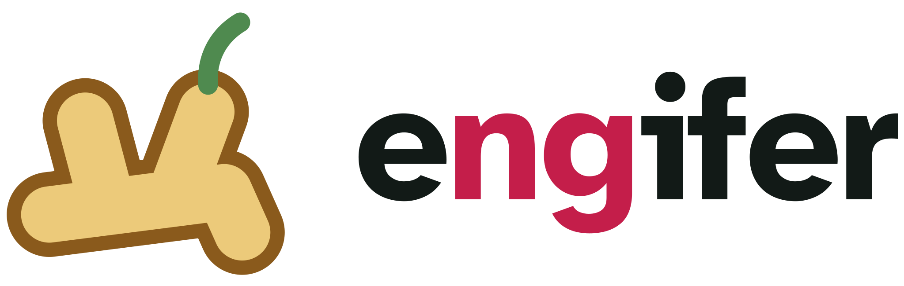
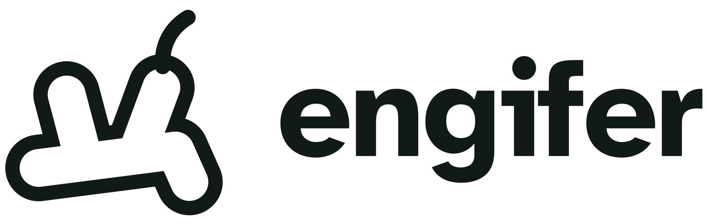

Name
Engifer is Icelandic for ginger. It's the new name for the framework that started out as ng-objects; the code and repositories still use the ng name while the rename is under way.
The wordmark is always lowercase: engifer. In the logo and site header, the ng inside the name gets its own colour, so the old name stays visible in the new one. That colouring belongs to the wordmark only; don't repeat it in headings or running text.
Logo
The mark is a hand of ginger root with a green shoot. The wordmark is Atkinson Hyperlegible Bold, converted to outlines. Every file, including PNGs at common sizes and a link-sharing card, is in logo/, described in logo/README.md.



Mark colours
These belong to the mark and stay the same whichever palette the surrounding page uses.
#8a5a1cOutline#ecca7aFill#4f8a4fShootPalettes
There are two palettes in use. Torch is the website's: bright and lively, for drawing people in. Ginger leaf is calmer and suits in-app surfaces such as error pages, exception pages and info messages, where things should feel steady rather than loud.
Torch Website
#074b3cStart page hero, and nothing else#ff5a82Current-page marker and card edges. Not for text: only 3.4:1 on emerald#c41e4aLinks and labels on light backgrounds (5.8:1 on white)#ffb320Primary buttons, ng on dark, callouts. Text on emerald 5.6:1#fff8e6Callout background (markdown asides)#3ee8a5Hero glow, top right (16%)#f5f8f6Page background#121a17Text#56635cSecondary textGinger leaf In-app
#1d3b2fDark surfaces#f0c75eAccent on leaf (7.6:1)#e2b13fLink underlines on light#2f6f4aLabels, callout edges, ng on light#e6efe8Callout background#f4f6f3Background#1c211dText#a9bdb0Secondary text on leafTexture
The start page hero carries a faint blueprint grid (24px minor lines, 120px major lines, in a pale mint at 4% and 8% opacity) with one soft mint glow from the top right. It should be felt more than seen. It belongs to the hero only; the rest of the site stays plain.
Type
Inter for all text, in regular, medium and semibold, with JetBrains Mono for code. They're the same faces as whoacommunity.com, and both are self-hosted (latin and latin-ext subsets, so Icelandic works).
The wordmark in the logo is drawn from Atkinson Hyperlegible Bold and stays that way: it's part of the logo, not running text. Atkinson was the site's typeface until 2026-10-13.
Components pair an HTML template with a Java class, and engifer apps deploy alongside your existing WO apps.
Layout
The same structure as whoacommunity.com: a full-height sidebar on the left holding the logo and the contents tree, a thin top bar with breadcrumbs and search, and a wide content area (up to 1400px). Running text keeps a readable width of about 74 characters; code, tables and reference material use the full width. On small screens the logo stays at the top and the tree moves below the page.
History
Earlier palettes, kept so we can come back to them.
Torch violet Tried
#3a1659Band#c9b8e0Secondary text on violet, grid lines#f7f6fbBackground#16141fTextLupine Retired
#5b45a0Accent, links, buttons#ece8f6Callouts#15232cText#5a6a73Secondary text#f5f7f8BackgroundGinger earth Retired
#8a5a1cAccent, links, buttons#f5edccCallouts#a33d50Strings in code#1c211dText#f5f6f4BackgroundTimeline
| Date | Palette | Commit | Notes |
|---|---|---|---|
| 2026-09-22 | Lupine | ff13ca9 | Own stylesheet replaces Bootstrap. Site is still ng-objects on fermentedshark.com. |
| 2026-10-13 | Ginger earth | engifer rebrand | Rename to engifer begins on engifer.com. New ginger-root mark replaces the shark. |
| 2026-10-13 | Ginger leaf | engifer rebrand | Dark leaf-green band, content-led front page, then the navigation tree and logo files. |
| 2026-10-13 | Torch violet | engifer rebrand | Brighter palette with a blueprint texture on violet. Ginger leaf moves to in-app use. |
| 2026-10-13 | Torch | engifer rebrand | The same treatment on vivid emerald. |
| 2026-10-13 | Torch | engifer rebrand | Quieter: whoacommunity-style sidebar layout, Inter and JetBrains Mono, the emerald kept to the start page hero with a subtler grid, fewer colours. |